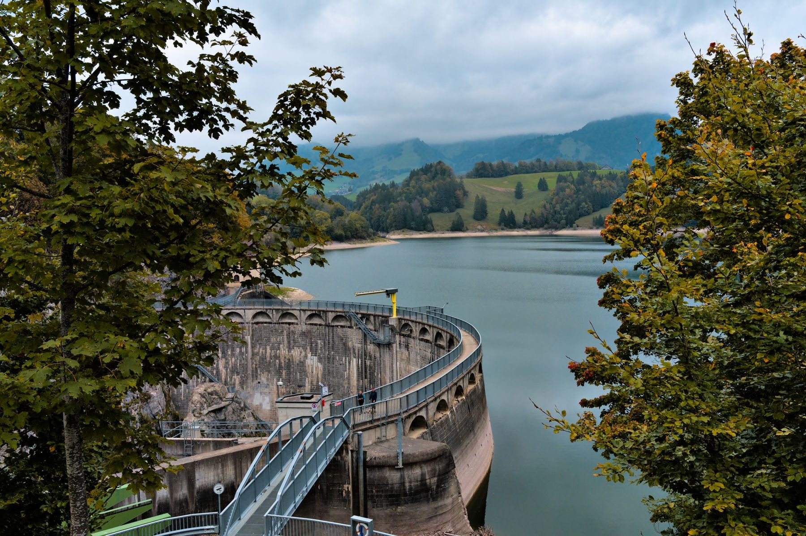
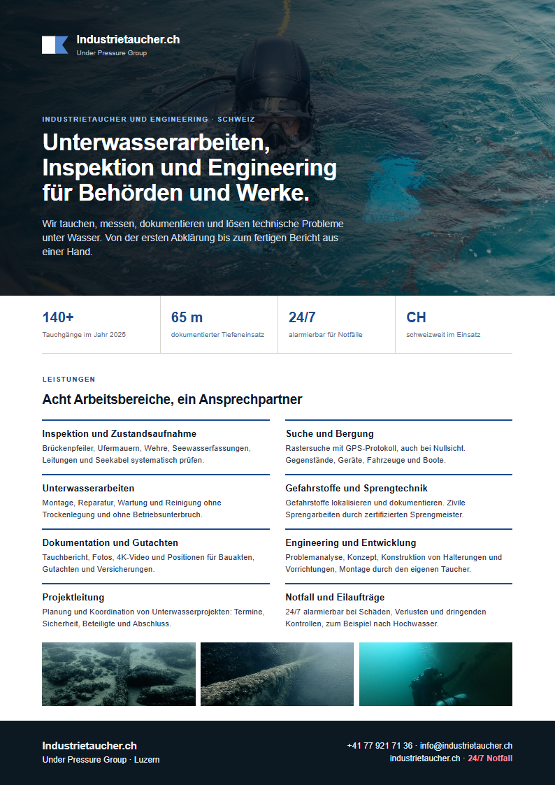

Unterwasserarbeiten, Inspektion und Engineering für Behörden und Werke.
Wir tauchen, dokumentieren und lösen technische Probleme unter Wasser. Aus einer Hand.
Was wir für Sie übernehmen

Inspektion
Pfeiler, Ufermauern, Wehre, Leitungen und Seekabel prüfen.

Suche und Bergung
Rastersuche mit Protokoll, auch bei Nullsicht.

Unterwasserarbeiten
Montage, Wartung und Reinigung ohne Trockenlegung.

Engineering
Problemlösungen und Entwicklungen für unter Wasser.

Projektleitung
Planung und Koordination von Unterwasserprojekten.

Gefahrstoffe und Sprengtechnik
Mit zertifiziertem Sprengmeister.

Dokumentation
Bericht, Fotos und Video für Akten und Gutachten.

Notfall
24/7 alarmierbar bei dringenden Einsätzen.

Partner für Städte, Gemeinden und Werke.
Kontrollen von Wasserbauten, Arbeiten an Fassungen und Bädern, Suchen im Auftrag der Behörden. Mit Dokumentation, die in die Akte passt.
Sie vertrauen uns
 Immobilien und Hallenbad
Immobilien und Hallenbad

Taucher und Konstrukteur in einer Person.
Wer unter Wasser einen Befund aufnimmt, sollte verstehen, was er sieht. Deshalb verbinden wir Tauchen mit technischer Ausbildung.
- Industrietaucher, Sprengmeister, KonstrukteurSeltene Kombination, direkt bei Ihrem Einsatz.
- Bis 65 m dokumentiertTiefeneinsätze mit Nitrox und Trimix nach Vereinbarung.
- Dokumentation inklusiveBericht, Fotos und Video bei jedem Einsatz.
- Öffentliche PreislisteVerbindliche Offerte vor Einsatzbeginn.


Firmenflyer als PDF
Alle Leistungen und Kontaktdaten auf zwei Seiten, für Ihr Dossier.
Flyer herunterladenDringender Einsatz?
Rund um die Uhr erreichbar. Bei Personen im Wasser zuerst 117, 118 oder 144.